|
Hacking Housing How can architecture leverage the real property marketplace for useroriented design research? Tamar Ofer
Final project for the MIT class
4.550/4.570
Computation Design Lab |
|
| 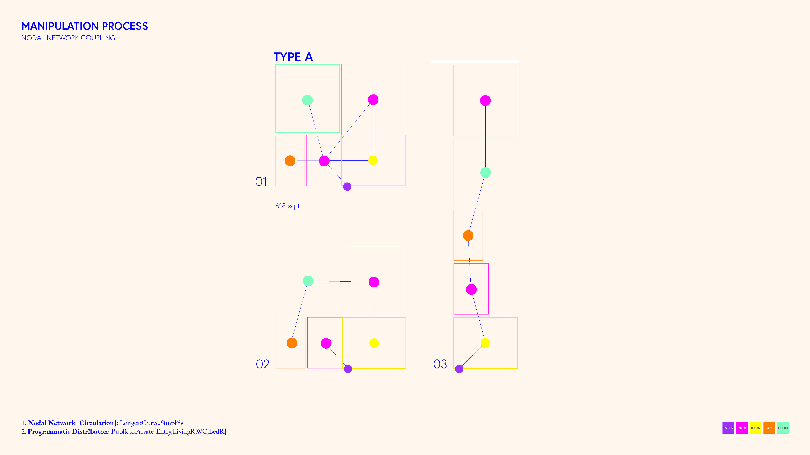 |
Manipulation Process - Nodal Network Coupling
1. Nodal Network [Circulation]: LongestCurve, Simplify
|
Project OverviewHow can Architects utilize market research for a user-focused design? How can the digital marketplace serve architects as a rapid design tools to learn from their users? Architects need quicker feedback loops, earlier in the design process. This experiment lays the groundwork for a novel solution space exploration approach leveraging the digital property marketplace for crowdsourcing user preference. It proposes a new design research strategy for measuring preference and importance users place on different features of spatial configuration in residential floor plan layouts. To do so, crowdsourcing methods were conducted to evaluate spatial preference via joint geo-spatial preference and pairwise ranking (i.e. rental listing inquires) of three rental unit type couples (six listings in total). Overall, 7,467 users took part in the three-week experiment, and 376 (5% of total viewers) inquired for further information as potential tenants. The framework leverages two existing sources: MIT Data Warehouse: Buildings dataset Floorplans is used as the primary dataset for graduate residential unit (apartment) floor plans. These are then manipulated via a parametric design framework; reorganizing the spatial configuration from the typical clustered organization to a linear circulation of cells (e.g. rooms). After the coupling process is complete, the dual set of floorplans are then uploaded into the Zillow Listing Manager platform. The Zillow.com rental marketplace platform is then put into action as the testing grounds for the specific target user preference evaluation. Three types of units have been manipulated and uploaded as “twin studies”; all based on existing MIT on-campus graduate student residential units: A two-bedroom apartment (roommates only), a one-bedroom apartment (for couples or singles) and a studio apartment (for singles only). Given a vectorized input floor plan via MIT’s Data Warehouse, we segment the input image into different room regions, as well as generating a room graph layout to encode the geometric and semantic information. Next, we perform a room segmentation step to extract the room semantic by optimizing the floor plan elements and get the room type by combining text detection. Semantic Pattern-Based Retrieval of Architectural Floor Plans with Case-Based and Graph-Based Searching Techniques and their Evaluation and Visualization The rating prediction task (i.e. regression) analysis of accumulated data. Response variables The proposed method can learn to replace the rules of thumb with accurate measures to determine how our user evaluates spatial typology, and thus can improve our space by gathering and analyzing member feedback. Evaluation on three publicly available datasets (???) shows that our method performs significantly better than state-of-the-art techniques for the xxx. |
||
| 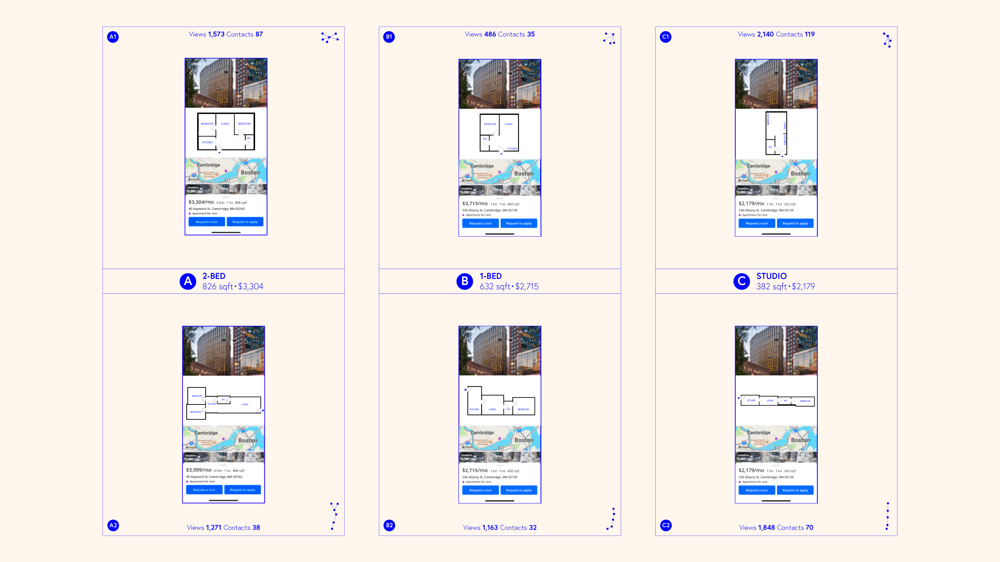 |
Fig 1. Zillow Listings |
| 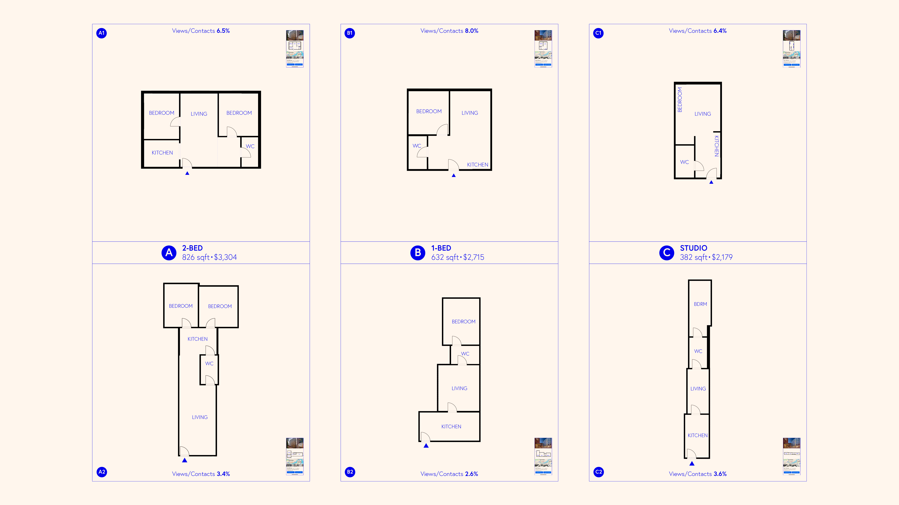 |
Fig 2. Unit Types |
| 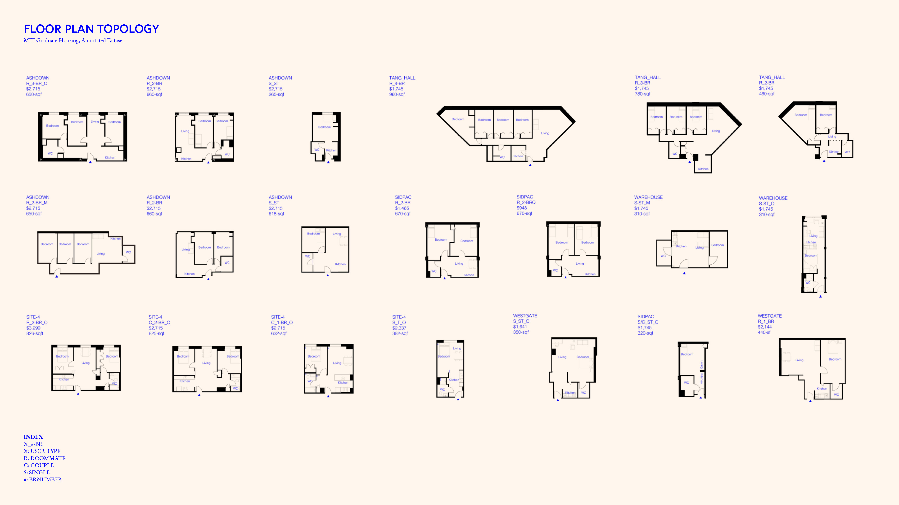 |
Fig 3. Floor Plan Topology - MIT Graduate Housing, Annotated Dataset |
| 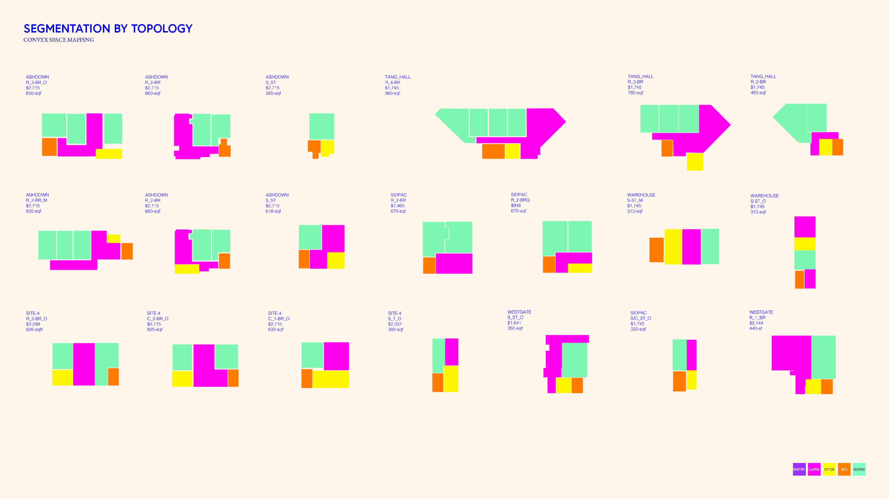 |
Fig 4. Segmentation By Topology - Convex Space Mapping |
| 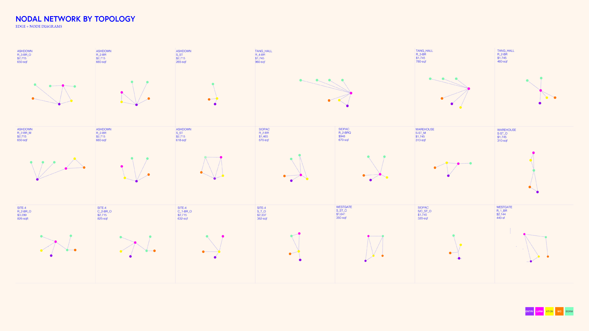 |
Fig 5. Nodal Network By Topology |
| 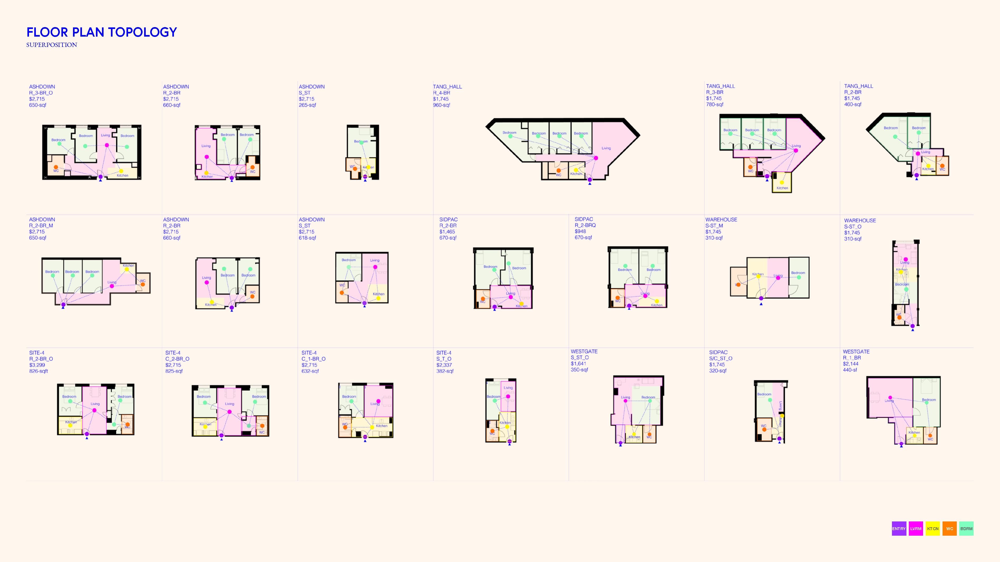 |
Fig 6. Floor Plan Topology - Superposition |
|
Fig 7. Manipulation Process - Nodal Network Coupling |
|
| 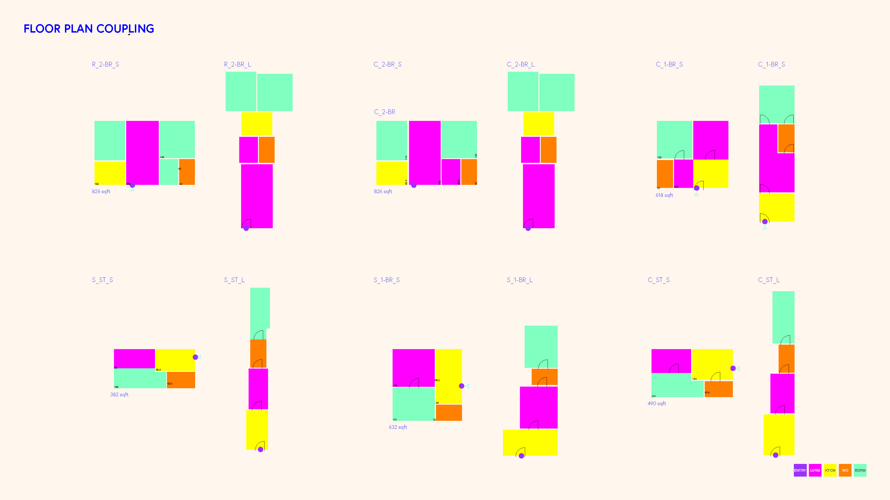 |
Fig 8. Floor Plan Coupling |
| 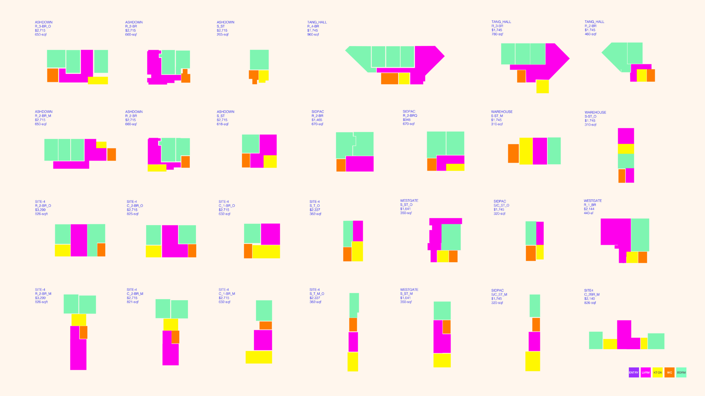 |
Fig 9. Floor Plan Coupling 2 |
| 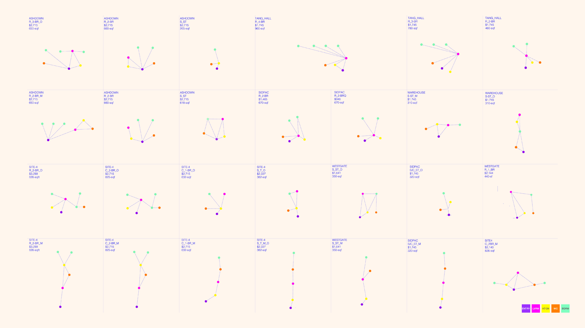 |
Fig 10. MIT Graduate Housing Dataset - Class-Nodal-Network |
| 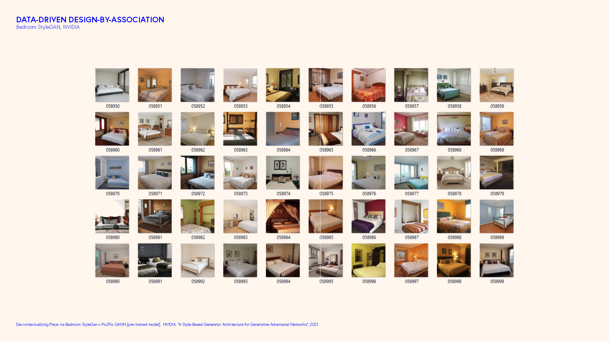 |
Fig 11. Data-driven Design-by-Association - Bedroom StyleGAN, NVIDIA |
2013 All rights reserved. Last modified: Jan. 30, 2014 by TN